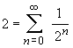

Hikayeler ve espriler III
Hayat karmaþýktýr: Onun gerçek ve sanal kýsýmlarý
bulunur.
Matematik öðrencisi Genel Topolojiden sözlüdeydi
("Genel Topolojiden nasýl sözlü yapýlýr?" diye sormayýn, bu bir hikaye).
Durumu da epey kötüydü. Öðrencinin yerlerde sürünen performansýndan gýna gelen
hocalardan biri sordu:
"-Pekala, topoloji hakkýnda ne biliyorsun? Bari onu
söyle." Öðrenci cevap verdi:
"-Topolojistin tanýmýný biliyorum."
"-Söyle bakalým," dedi hoca, öðrencinin
ünlü bir topolog bir kahve fincaný ile simit arasýndaki farký bilmeyen kiþidir
þeklindeki tanýmý vereceðini umarak; ancak öðrecinin cevabý farklýydý:
"-Bir topolog kýçýyla yerdeki bir delik arasýndaki
farký bilen, fakat kýçýyla yerdeki iki delik arasýndaki farký bilmeyen
kiþidir."
En son bilgime göre, öðrenci dersten geçmiþ.
"Delikanlý, parlamento üyesi olmak istediðini
anlýyorum. Öðrenmen gereken ilk ders, ben bebek ölümlerinin oranlarý hakkýnda
istatistiksel bir rapor istediðimde, benim bütün istediðim, benim baþbakanlýðým
döneminde ölen bebeklerin sayýsýnýn baþka herhangi birinin baþbakanlýðý
dönemindekilerden daha az olduðunun kanýtýdýr.
Politik istatistik budur."
--Winston Churchill.
Entropi artýk eskisi gibi deðil.
Üniversitenin birinde sýnavlarda hesap makinesinin
kullanýlmasýna izin verilip verilmesi konusunda tartýþmalar yapýlýyordu. Fizik
bölümü kullanýlmasý yönünde oy kullanan ilk bölümdü. Ýlk 3 saatlik sýnavda da
þu tek soruyu sormuþlardý:
"Planck sabitini 1 kabul ederek evreni
tanýmlayýn."
Feynman bir gün derste açýsal momentumdan söz ediyordu.
Döndürme (rotasyon) matrislerini tanýmladý ve onlarýn deðiþmeli olmadýklarýný
söyledikten sonra ekledi:
"Sir William Hamilton bu deðiþme özelliðinin
olmadýðýný Lady Hamilton'la bir bahçede gezintideyken keþfetmiþti. Bir banka
oturduklarýnda bir anlýk bir tutku dalgasý geçti. Ýþte bu anda Hamilton AxB'nin
BxA'ya eþit olmadýðýný fark etti."
Bir ampulü deðiþtirmek için ...
Bir ampulü deðiþtirmek için kaç genel relativiteciye
ihtiyaç vardýr?
Ýki. Biri ampulü tutar, diðeri evreni döndürür.
Bir ampulü deðiþtirmek için kaç quantum fizikçisine
ihtiyaç vardýr?
Bir. Ýkisi bunu yapmak, biri de dalga fonksiyonunu renormalize etmek için.
Bir ampulü deðiþtirmek için kaç quantum mekanikçisine
ihtiyaç vardýr?
Onlar bunu yapamaz; çünkü duyun yerini belirleseler ampulün yerini belirleyemezler.
Bir ampulü deðiþtirmek için kaç Heisenberg'e ihtiyaç
vardýr?
Sayýsýný bilirsen ampulün yerini bilemezsin.
Bir ampulü deðiþtirmek için kaç astronoma ihtiyaç
vardýr?
Hiç; onlar karanlýðý tercih eder.
Bir ampulü deðiþtirmek için kaç radyo astronomuna
ihtiyaç vardýr?
Hiç; onlar bu tür kýsa dalgalarla ilgilenmezler.
Deneyci heyecanla teorisyenin odasýna girer. Elinde son
deneyiyle ilgili bir grafik vardýr.
Teorisyen grafiði inceler ve "hýmmm," der,
"iþte tam þu senin elde ettiðin yerde bir maksimum çýkmasý gerekiyordu. Nedeni
de þu... (mantýksal bir sürü açýklama)"
Deneyci, "bir dakika," der, "grafiði ters
tutuyorsun." Grafiði ters çevirerek teorisyene verir.
Teorisyen grafiði inceler ve "hýmmm," der,
"iþte tam þu senin elde ettiðin yerde bir minimum çýkmasý gerekiyordu. Nedeni
de þu ..."
*Önce oku atýp sonra da okun isabet noktayý merkez
kabul eden daireleri çizen ve böylece daima 12'den vuran okçunun hikayesini duymuþ
muydunuz?
Sonraki soru þuydu: Gezegenleri Güneþ'in etrafýnda
döndüren nedir?
Kepler'in zamanýnda bazýlarý bu soruya gezegenlerin
arkasýnda meleklerin bulunduðu ve onlarýn kanatlarýný çýrparak gezegenleri
yörünge üzerinde ittiði cevabýný veriyordu. Göreceðiniz gibi, bu cevap gerçekten
o kadar da uzak deðildir -- tek farkla ki melekler baþka bir yerde duruyorlar ve
gezegenleri Güneþ'e doðru itiyorlar.
--Richard Feynman Character Of Physical Law, p. 8
*Feynman'ýn ne demek istediðini gerçekten merak
edenlere, Genel Çekim Yasasýný incelemeleri önerilir.
Chem 101 Lab ilk yasa: Sýcak ve soðuk camýn
görünüþü aynýdýr.
Daha sonra yanlýþ olduðunu bulduðumuz bir çok þeyi
bilmedikleri için sýnýfta býraktýðýmýz kimya öðrencilerinin sayýsý üzerinde
düþünmek bile çok rahatsýzlýk verici.
--quoted in Robert L. Weber, Science With a Smile (1992)
Enzimler, baþka türlü açýklamak için üzerinde derin
düþünme gerektiren þeyleri açýklamak için biyologlar tarafýndan uydurulmuþtur.
-- Jerome Lettvin
Benim söylediðimi sandýðýn þeyi anladýðýna
inanýyorum, fakat senin iþittiðin þeyin benim kastettiðim þey olmadýðýný fark
ettiðinden emin deðilim.
Beni gerçeði arayan insanlarýn arasýna götür; onu
bulmuþ olanlardan beni kurtar.
Teknisyenler mühendis olduklarýný düþünürler,
Mühendisler fizikçi olduklarýný düþünürler, Fizikçiler matematikçi olduklarýný
düþünürler, Matematikçiler filozof olduklarýný düþünürler, Filozoflar teknisyen
olduklarýný düþünürler.
Teoride teori ile pratik arasýnda bir fark yoktur, ama
pratikte arada dünya kadar fark vardýr.
Adý konulmamýþ bir yasa: Gerçekleþiyorsa,
mümkün olmalýdýr.
Babaannene açýklayamadýðýn bir þeyi hakkýyla
anlamýþ sayýlmazsýn.
--Albert Einstein
*Einstein'ýn söylediði iddia edilen bütün laflarý
onun söyleyip söylemediðini çok merak ediyorum. Hani, adam modern bir Nasrettin Hoca
haline gelmiþ olmasýn!?
Hakem kararý: Anlayamadýðýmdan nefret ederim,
nefret ettiðimi redderim.
Kolayca anlaþýlabilecek þeyleri anlaþýlmaz hale
getirmek de çok kolaydýr. Bilim ve felsefede itibarlý olmanýn en kestirme yolarýndan
biri ve en kullanýþlýsý da budur. Ýþte bir örnek:
1 + 1 = 2 (1)
Ne kadar basit ve anlaþýlýr! Bunu böyle yazarsanýz
kimse dönüp bakmaz bile. Haydi bunun üzerinde biraz çalýþalým.
1'e eþit olan matematiksel iki ifade var:
1 = ln e ve 1 = sin2 x + cos2
x
2'ye eþit olan matematiksel bir ifade var:

O halde (1) daha bilimsel olarak þöyle ifade edilebilir:
ln e + sin2 x + cos2 x
=  (2)
(2)
Bunun hala basit göründüðünü iddia etmek doðaldýr;
ancak daha yolun ortasýndayýz ve yapabileceklerimiz bunlarla sýnýrlý deðil:

eþitliklerini göz önüne alýrsak (2) ifadesini þöyle
yazabiliriz: